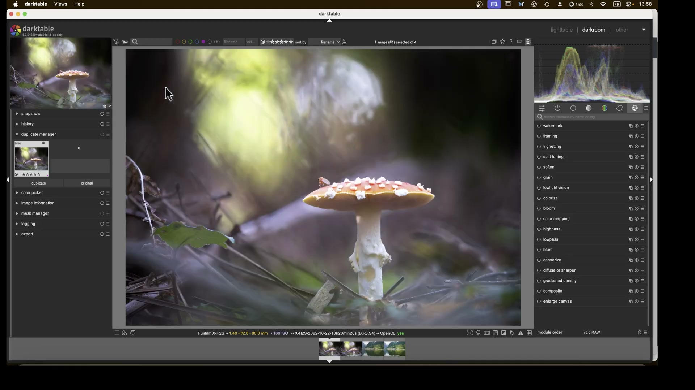
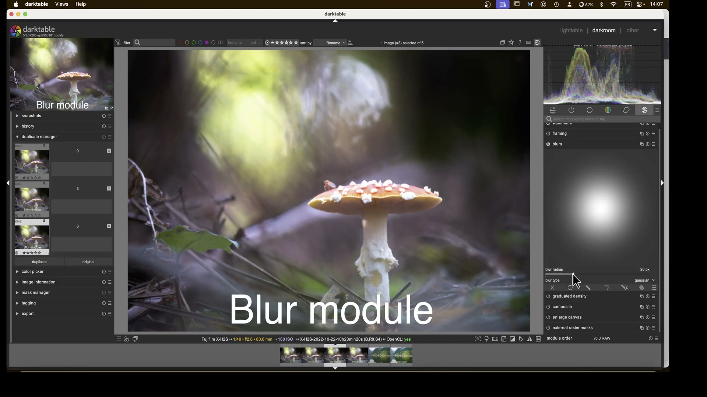
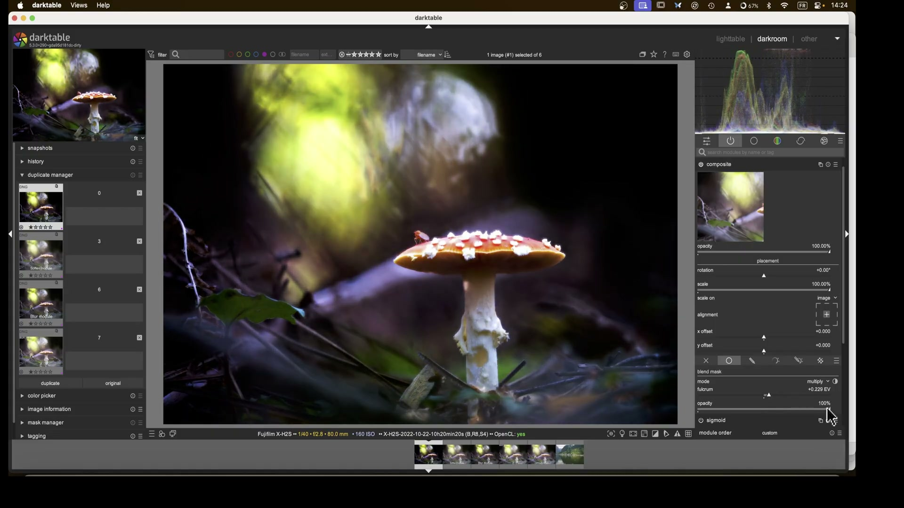
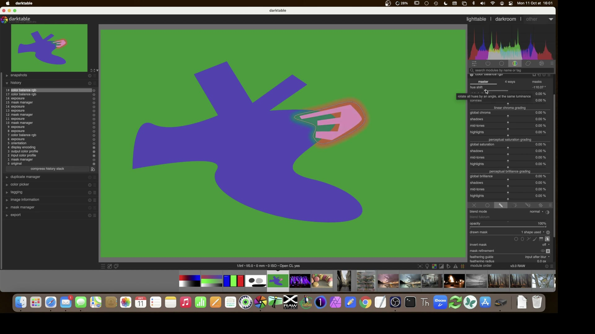
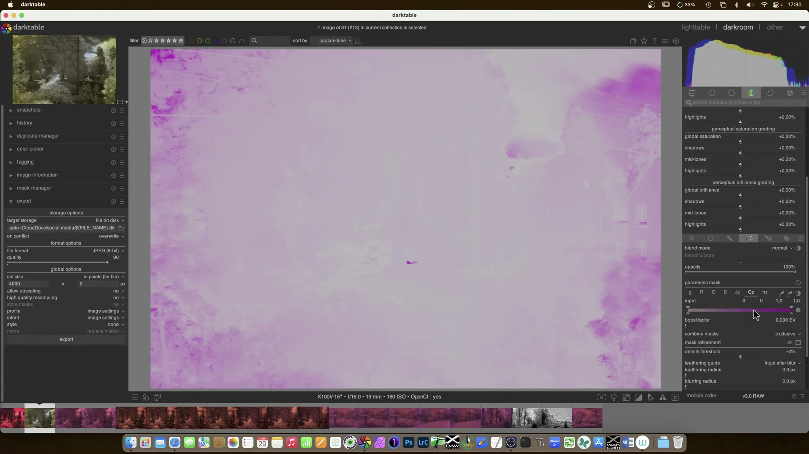
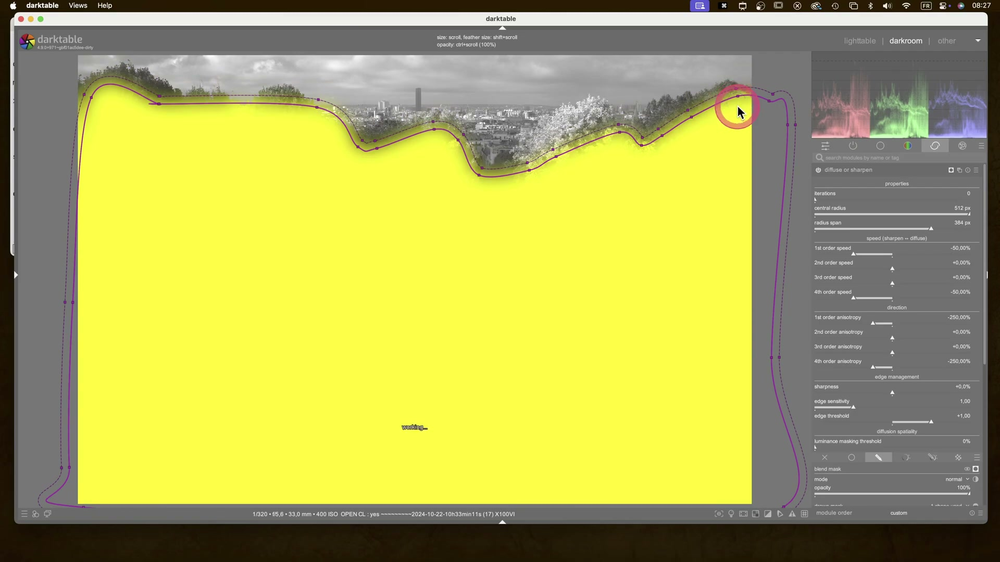

Orton Effect & Dragan Effect in darktable¶
L’Orton effect e il Dragan effect sono due tecniche di post-produzione che creano un’atmosfera onirica, luminosa e drammatica rispettivamente:
- Orton: glow morbido, etereo, con alta luminosità e leggera sfocatura — ideale per paesaggi, fiori e ritratti delicati1.
- Dragan: contrasto esploso, dettagli iper-definiti, ombre profonde e luci incandescenti — nato per ritratti drammatici e street photography2.
Entrambi non esistono come moduli nativi singoli in darktable, ma si costruiscono combinando moduli esistenti nella pipeline scene-referred. Il modulo soften implementa l’Orton in modo semplificato, mentre il Dragan richiede un flusso avanzato con composite, blur, sigmoid e maschere locali12.

Perché non usare preset esterni?
I preset .dtstyle (es. Red Max Payne, Lomo’s Effect)56 offrono scorciatoie stilistiche, ma non replicano fedelmente Orton/ Dragán, perché mancano del controllo fine sulla fusione dei livelli e sulla gestione della gamma dinamica. Usali solo come punto di partenza — non come soluzione definitiva1.
Panoramica del flusso di lavoro¶
Entrambi gli effetti richiedono una duplicazione dell’immagine per lavorare su livelli separati. Il posizionamento del modulo composite è critico: deve essere inserito prima di tone curve/AGX, ma dopo tutti i moduli di correzione base (esposizione, bilanciamento bianco, correzione ottica)2.
1. Correzioni base (exposure, white balance, lens correction)
|
2. Duplicazione → creazione livello “sfocato” (Orton) o “inversione + fusione” (Dragan)
|
3. Composite → fusione con modalità Multiply / Screen / Overlay
|
4. AGX / Sigmoid → compressione tonale finale
|
5. Affinamenti locali (local contrast, sharpen, color balance rgb)
Errore comune: ordine sbagliato di composite
Se composite è posizionato dopo AGX, la fusione avviene su dati già compressi → risultati piatti, senza profondità. Verifica sempre la posizione con il pulsante Show module order (icona a tre puntini in alto a destra del pannello moduli)2.
Flusso pratico: Orton Effect con soften¶
Il metodo più rapido e controllabile per l’Orton è usare il modulo soften, progettato appositamente per replicare il processo analogico di Michael Orton3.
Passo 1: Preparazione base¶
- Applica
exposure: regola l’esposizione globale a 0.00 EV (non sovraesporre prima di soften). - Usa
white balance: imposta un bilanciamento neutro (es. preset Daylight o pipetta su grigio neutro). - Attiva
lens correction: correggi distorsione e vignettatura (distortion = 1.000, vignetting = 1.000)2.
Passo 2: Configurazione soften¶
Attiva il modulo soften e imposta:
| Parametro | Valore consigliato | Perché |
|---|---|---|
| size | 25–40% |
Controlla l’intensità della sfocatura. Valori >40% generano un glow eccessivo e perdita di dettaglio1. |
| saturation | 80–100% |
Aumenta la vividezza del livello sfocato, fondamentale per il glow cromatico1. |
| brightness | +0.70–+1.20 EV |
Sovraesposizione del livello sfocato: +1.00 EV è il valore standard per Orton3. |
| mix | 45–55% |
Bilancia tra immagine nitida (base) e sfocata (glow). 50% = fusione perfetta3. |

Passo 3: Affinamento finale¶
- Aggiungi
AGX: usa Contrast = 2.20–2.60 (non >3.00, altrimenti il glow diventa artificiale)1. - Usa
color balance rgb: attenua leggermente il blu (Blue attenuation = 20%) prima di AGX per evitare clipping nei cieli7. - Applica
vignetting: bordo scuro sottile (strength = -15%, radius = 70%) per focalizzare l’attenzione sul centro6.
Flusso pratico: Dragan Effect con composite¶
Il Dragan richiede 3 livelli: originale, sfocato invertito, fuso in Multiply. È un flusso avanzato ma preciso2.
Passo 1: Creazione dei livelli¶
- Clicca su Duplicate (icona copia nel pannello sinistro) → crea una copia.
- Nella copia, applica:
blur: blur_type = gaussian, blur_radius = 18–22 px (valore dipende dalla risoluzione: 20 px per 6000px larghezza)2.invert: attiva il moduloinvert(non presente di default: abilitalo in preferences > modules > invert).- Torna all’immagine originale e attiva
composite.
Passo 2: Configurazione composite¶
Nel modulo composite, imposta:
| Parametro | Valore | Nota |
|---|---|---|
| blend mode | Multiply |
Fondamentale: intensifica le ombre e mantiene i dettagli nelle luci2. |
| opacity | 85–95% |
Non al 100%: lascia trasparire un po’ di dettaglio dall’originale2. |
| mask | global (nessuna maschera) |
Il Dragan è un effetto globale. Evita maschere se non vuoi un look parziale. |

Passo 3: Rafforzamento del contrasto¶
- Aggiungi
sigmoid: attivalo dopocomposite. - contrast =
1.80–2.20 - midtones =
0.45–0.55 -
black point =
-0.10 EV, white point =+0.05 EV
(Questi valori evitano il clipping e preservano il dettaglio nei neri profondi)2. -
Usa
local contrast: applica una maschera sul volto/soggetto con detail = 110–130%, highlights = 60%, shadows = 40% per enfatizzare texture senza bruciare le luci2.
Parametri chiave a confronto¶
| Effetto | Modulo chiave | Parametro | Valore tipico | Osservazione pratica |
|---|---|---|---|---|
| Orton | soften |
size |
34.55% |
Valori >45% rendono l’immagine “appannata”: controlla zoom 100% sui bordi1. |
| Orton | soften |
brightness |
+1.00 EV |
Se l’immagine appare troppo lavata, riduci a +0.70 EV e aumenta saturation3. |
| Dragan | blur |
blur_radius |
20 px |
Su immagini <4000px, usa 12–15 px. Troppo poco → nessun effetto; troppo → artefatti da aliasing2. |
| Dragan | composite |
opacity |
90% |
Valori <80% indeboliscono il dramma; >95% appiattiscono il volume tonale2. |
| Entrambi | AGX |
Shoulder power |
1.20–1.40 |
Riduci rispetto al default (1.55) per preservare i dettagli nelle luci glow/drammatiche8. |
Consigli operativi¶
Workflow ottimale per entrambi
- Lavora sempre su copia duplicata, mai sull’originale.
- Usa snapshot per salvare stati intermedi (Original, Orton base, Dragan full).
- Prima di esportare, verifica con
scopes→histogram: il picco delle luci deve essere a ~95–98%, mai al 100% (clipping)2.
Cosa evitare assolutamente
Riferimenti visuali¶

Color Balance RGB · frame a 507s da video YouTube
Color Equalizer · frame a 967s da video YouTube
Diffuse Or Sharpen · frame a 808s da video YouTubeRisorse utili¶
- Video tutorial Orton in darktable (inglese) — metodo
soften,blur+composite1 - Video tutorial Dragan in darktable (inglese) — flusso completo con
composite,invert,sigmoid2 - Manuale ufficiale
soften— documentazione tecnica completa3 - Manuale ufficiale
composite— spiegazione approfondita delle modalità di fusione4
Fonti¶
-
A Dabble in Photography, The Orton effect in darktable, YouTube, 2026. URL: https://www.youtube.com/watch?v=OF7ZcDPQfeM ↩↩↩↩↩↩↩↩↩
-
A Dabble in Photography, The Dragan effect in darktable, YouTube, 2026. URL: https://www.youtube.com/watch?v=EuvG0lh8OB8 ↩↩↩↩↩↩↩↩↩↩↩↩↩↩↩↩
-
darktable User Manual v4.8, soften module, https://docs.darktable.org/usermanual/4.8/en/module-reference/processing-modules/soften/ ↩↩↩↩↩↩
-
darktable User Manual v4.8, composite module, https://docs.darktable.org/usermanual/4.8/en/module-reference/processing-modules/composite/ ↩
-
darktable.fr, Style Red Max Payne Effect, 2016. URL: https://darktable.fr/posts/2016/03/style-red-max-payne-effect/ ↩
-
darktable.fr, Style Lomo's Effect, 2016. URL: https://darktable.fr/posts/2016/04/style-lomos-effect/ ↩↩
-
darktable 5.4 Release Notes, AGX as default tone mapper, https://github.com/darktable-org/darktable/releases/tag/release-5.4.0 ↩
-
darktable Documentation, AGX Tone Mapping Guide, https://docs.darktable.org/usermanual/5.4/en/module-reference/processing-modules/agx/ ↩